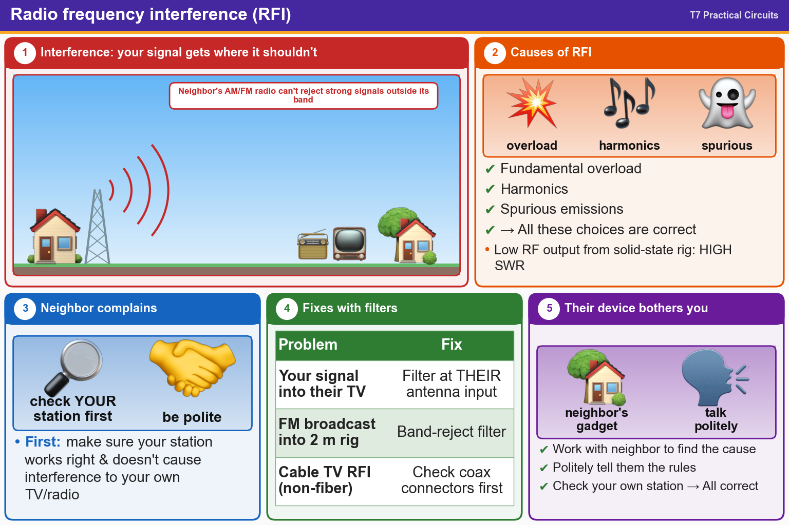

💡 Check your own station first. Filters go on the affected equipment. Band-reject filters block FM broadcast.
📚 Key words
- RFI
- Radio Frequency Interference: unwanted signals disturbing a radio or TV.
- Fundamental overload
- Your strong signal swamps a nearby receiver that can't reject it.
- Harmonics / spurious emissions
- Extra unwanted signals at other frequencies from a transmitter.
- SWR
- Standing Wave Ratio, a measure of antenna match. High SWR can lower a transmitter's power.
- Filter / band-reject filter
- Blocks unwanted signals. A band-reject filter blocks one range, like a nearby FM station.
- Coax connector
- The plug on a TV/radio cable. Loose ones let interference in. Check these first.
- Good amateur practice
- Make sure your own station works properly and doesn't interfere with your own TV.
Press Check on any question to see if you're right (it won't show the answer), or Grade at the bottom to grade the whole page.
T7B02
What would cause a broadcast AM or FM radio to receive an amateur radio transmission unintentionally?
✘A.The deviation of an FM transmitter is set too low
✘B.The audio amplifier of the transmitter is overloaded
✔C.The receiver is unable to reject strong signals outside the AM or FM band
✘D.The microphone gain of the transmitter is turned up too high
T7B03
Which of the following can cause radio frequency interference?
✘A.Harmonics
✘B.Fundamental overload
✘C.Spurious emissions
✔D.All these choices are correct
T7B04
Which of the following might be the cause of low RF power output from a solid-state transceiver?
✔A.High SWR
✘B.Poor amplifier linearity
✘C.Poor amplifier noise figure
✘D.Low SWR
T7B05
Which of the following might reduce interference by an amateur station to a non-amateur over-the-air radio receiver?
✔A.Block the amateur signal with a filter at the antenna input of the affected receiver
✘B.Switch the transmitter to a narrow-band mode
✘C.Block the interfering signal with a filter on the amateur transmitter
✘D.Switch the transmitter from FM to SSB
T7B06
Which of the following actions should you take if a neighbor tells you that your station’s transmissions are interfering with their radio or TV reception?
✘A.Install a harmonic doubler on the output of your transmitter and tune it until the interference is eliminated
✔B.Make sure that your station is functioning properly and that it does not cause interference to your own radio or television when it is tuned to the same channel
✘C.Immediately turn off your transmitter and contact the nearest FCC office for assistance
✘D.All these choices are correct
T7B07
Which of the following can reduce interference to a 2-meter band transceiver from a nearby commercial FM station?
✘A.Installing bypass capacitors on the microphone cable
✘B.Installing an RF preamplifier
✘C.Using double-shielded coaxial cable
✔D.Installing a band-reject filter
T7B08
What should you do if something in a neighbor’s home is causing harmful interference to your amateur station?
✘A.Politely inform your neighbor that FCC rules prohibit the use of devices that cause interference
✘B.Make sure your station meets the standards of good amateur practice
✘C.Work with your neighbor to identify the offending device
✔D.All these choices are correct
T7B09
What should be the first step to resolve non-fiber optic cable TV interference caused by your amateur radio transmission?
✔A.Be sure all TV feed line coaxial connectors are installed properly
✘B.Add a high-pass filter to the TV antenna input
✘C.Add a low-pass filter to the TV antenna input
✘D.Add a preamplifier to the TV antenna input